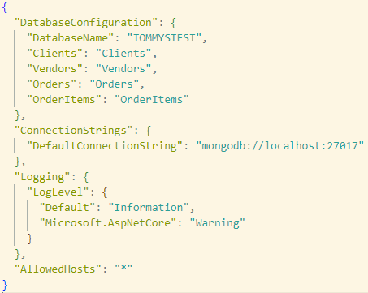
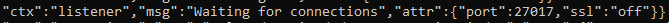

Client Estimate Generator Documentation
Created for Tommy's Tees of Ruston, Louisiana, the Client Estimate Generator is an application designed to speed up the process of generating price
estimates for bulk t-shirt orders. To facilitate this process and meet the needs of the client, the application
is additionally designed to maintain a continuously growing ledger of clients, and records client-specific, estimate-related
data. The ability to specify and recall details relevant to a specific customer is a key feature of the application, allowing
users to conveniently ascertain client-specific pricing rates, and quickly generate accurate estimates for each unique client.
Supported Versions:
App Version 0.0.1. In early development, no official releases or builds.
Tech Stack
Created with consideration of scalability, performance, and security, the application uses the .NET Framework, a lightweight MongoDB, and Fixie, a flexible testing environment for both unit and integration tests.
Application
- .NET - version 6.0
- MVC
- MediatR - version 12.1.1
- CQRS
- FluentValidation - verison 11.7.1
- Mapperly - version 3.0.0
- MongoDB C# Driver - version 2.21.0
Database
- MongoDB - version 6.0.8
Testing
- Fixie - version 3.3.0
- Moq - version 4.20.69 !!IMPORTANT TODO - CHANGE VERSIONS TO PRE-4.20!!
- Shouldly - version 4.2.1
Setting Up Development Environment
Installing MongoDB
The following setup steps have been extracted from the MongoDB docs. Link to source here.
MongoDB Download: Click
here to download MongoDB version 6.0.9 installation wizard.
Steps
- Download the installer using the link above.
- When download is finished, run the installer.
- When asked whether to install a complete or custom MongoDB installation, choose complete.
- When asked whether to run MongoDB as a service or not, choose no.
- Install MongoDB Compass or MongoShell to interact with database outside of application.
Note: Instructing MongoDB to not run as a service will prevent the local database from beginning
every time the computer boots up, thus requiring a manual start of the local database whenever the database is needed.
Running Local MongoDB Instance
Steps
- Create a directory within the C: drive entitled "\data\db".
- Add the location of MongoDB 6.0.9's executable file to the system path.
- Enter into your terminal the command: "mongod --dbpath="C:\data\db""
Note: Upon a successful database start, the messages: "Waiting for connections" and ""Listening on","attr":{"address":"ABC.D.E.F"}"should be displayed somewhere within the database startup terminal output.
Configuring App For Local Environment
In order to configure the application for local development, edit the ConnectionStrings section of the project's appsettings.json file. Example screenshot of appsettings.json below:

Edit the value of the DefaultConnectionString field to be "mongodb://localhost:YourPort", where YourPort is the port where MongoDB is exposed
on your local machine.
Note: The exact port can be found alongside the "Waiting for connections" message within the database startup terminal output. Example:

No further setup beyond changing the connection string to match your machine-specific local port is necessary to configure the application for a local development environment.
Running the App
In order to build and run the app locally, use either Visual Studio or the dotnet sdk for command line.
If using Visual Studio, simply run the app using the editor's UI.
Steps To Build/Run App In Command Line
-
Navigate to directory containing the ClientPricingSystem.sln file.
-
Enter into your terminal the command "dotnet build ClientPricingSystem".
-
If the build succeeded, enter into your terminal the command "dotnet run --project ClientPricingSystem".
-
Copy either of the addresses that follow the phrase "Now listening on: " from terminal output, and paste into your preferred browser.
-
The app should be running and responsive in your browser.